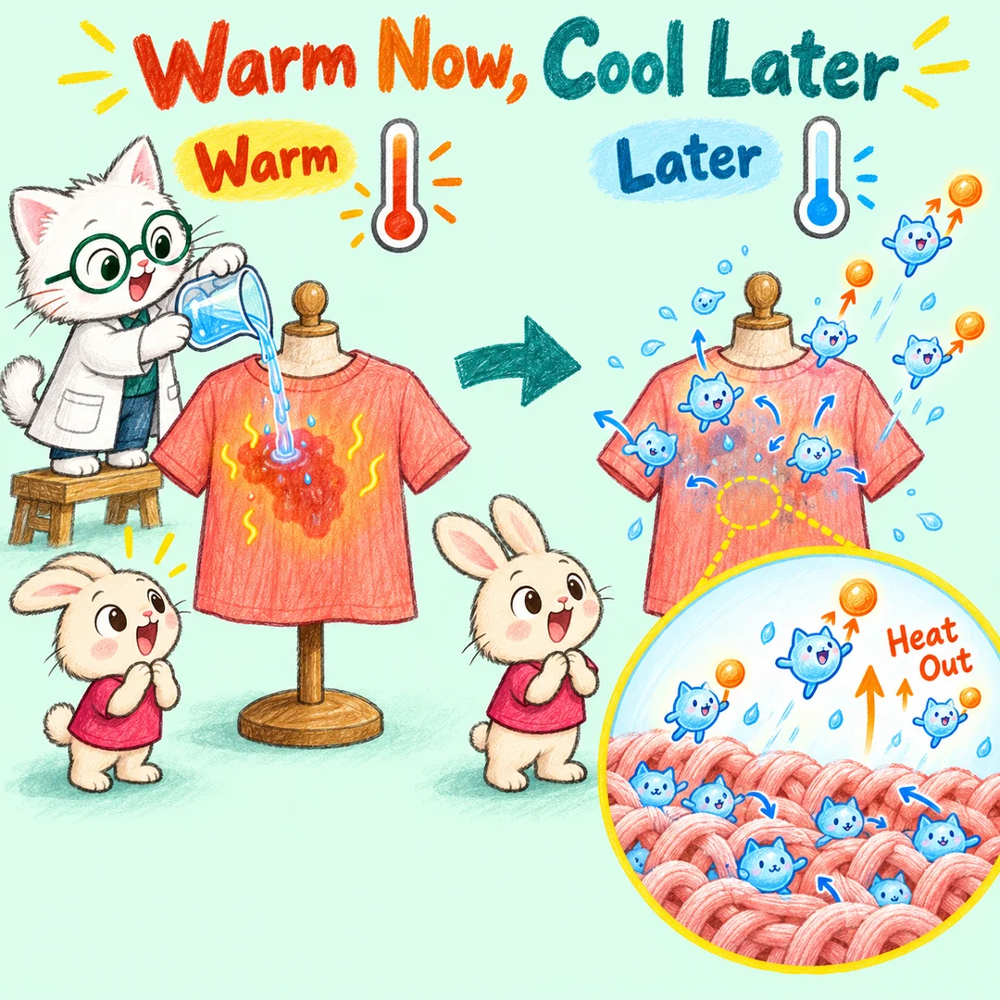
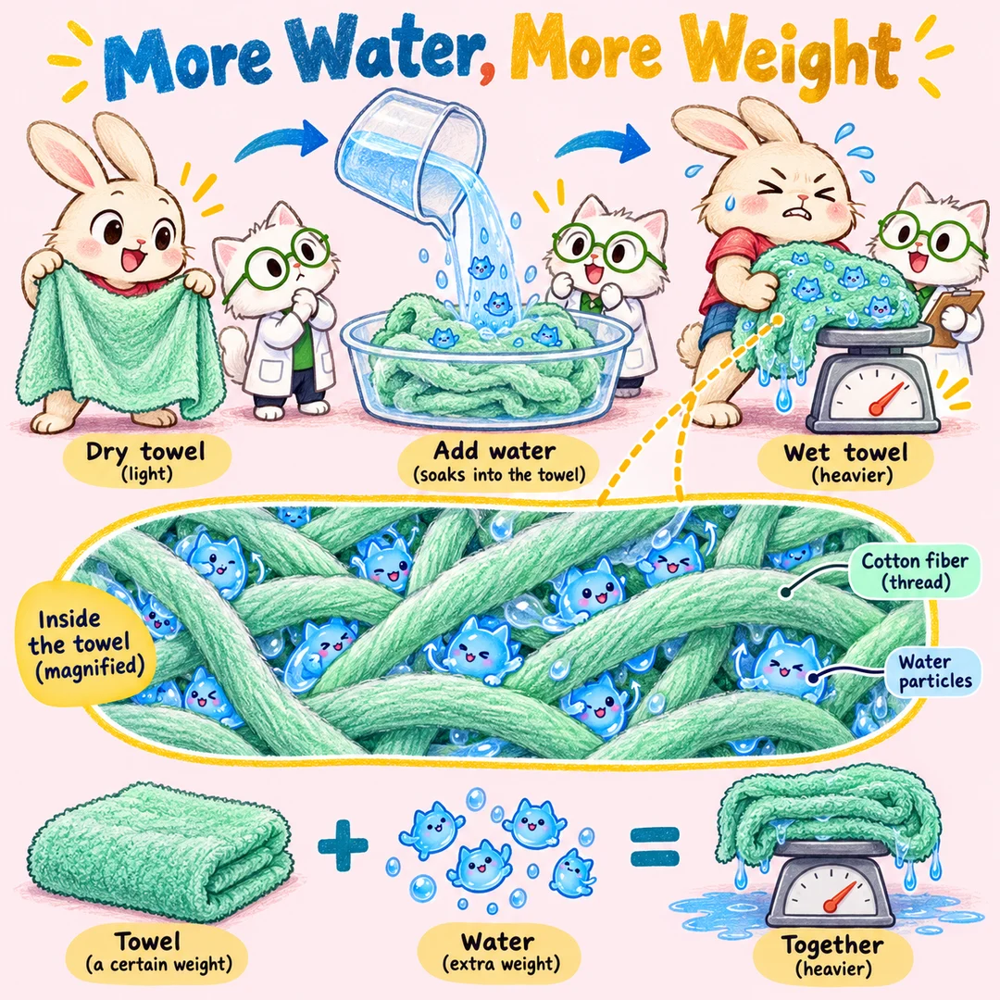
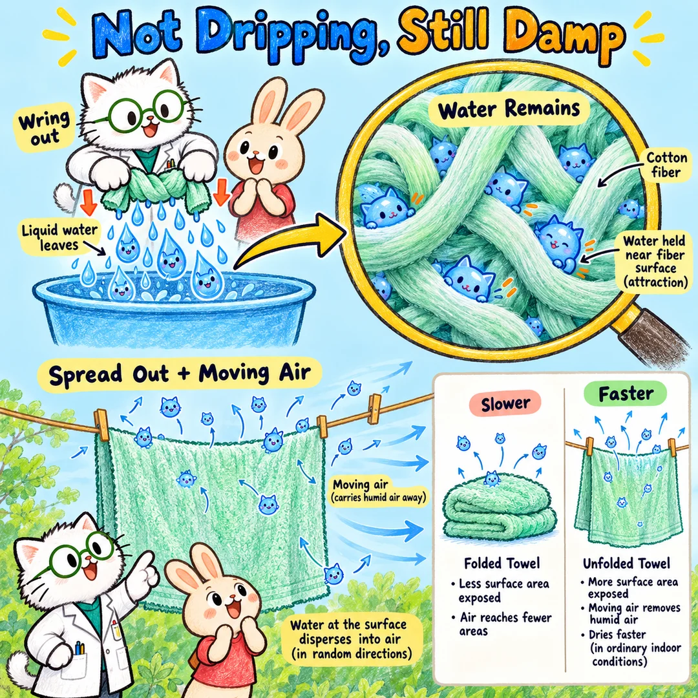
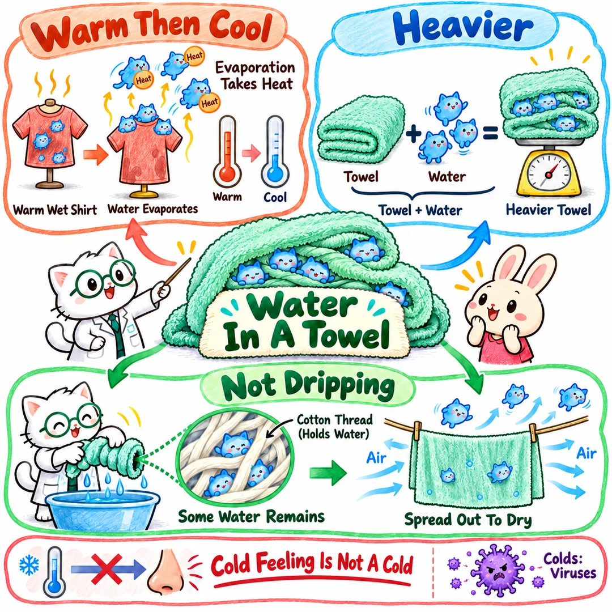

小猫解释万物 · 兔兔的浴室发现 · 2026.10.04
水小猫住进浴巾以后
在我们的世界里，那其实是一群水小猫，跑进了衣服和浴巾的棉线之间。
它们留下来，浴巾就变重；它们散到空气里，布就慢慢变干，还会带走热量。兔兔今天的三个问号，原来牵着同一根线：水小猫去了哪里？
第一站 · 跟着热量走
明明暖暖的，为什么不能往衣服上倒？
兔兔：“热水倒上去，明明感觉暖暖的呀！”
“你发现得很准。”喵博士把一件没有穿在身上的衣服放好，拿来一点温水，“刚来的水小猫，蹦蹦跳跳比较有劲儿。它们和衣服里的小猫碰来碰去，把一些热量传过去，所以衣服一下子暖了。”

可房间里的小猫也在不停碰来碰去。热量从暖暖的地方传到更凉的地方，水和衣服就渐渐没那么热了。
湿布表面，还有一些动得够快的水小猫挣脱了伙伴的拉力，散进空气。它们离开时也带走了热量。如果湿衣服贴着你，身体的热量也可能不断传过去，让你觉得凉。
这里没有猫队长喊“大家一起走”！水小猫一直各自运动、碰撞，有些离开，有些留下。散进空气的那一群，我们就看不见了。
那，凉凉的就会感冒吗？
喵博士摇摇头：“这是两件事。让鼻子生病的是另一队‘病毒小猫’，不是水小猫。身体觉得冷，不等于得了感冒；把水倒在衣服上，也不会凭空变出病毒。”
大人不让往身上倒水，是担心衣服湿了会冷、不舒服，水太热还会烫伤。我们的实验只用常温水，不往身上倒。
如果房间本来很热、身体正在发热，水小猫散开带走一些热量，反而可能让人觉得舒服。带走热量这件事没变，舒服不舒服要看当时的环境。
第二站 · 跟着重量走
浴巾没换一条，怎么变重了？
兔兔：“水倒在浴巾上，为什么浴巾变重了？”
喵博士递来一条干浴巾：“我们先看看里面。这里有好多棉线小猫，挨在一起，织成软软的布。”
水小猫来到这里，和棉线小猫互相拉住，也和身边的水小猫互相拉住。许多水就留在棉线之间的小缝里，还有一些进入棉线里面。浴巾吸进了水。

“每一只水小猫，都有一点点重量。”喵博士说，“你拿起湿浴巾，就要同时托住浴巾和这一大群水小猫。多托住了一份水，当然就更重了。”
兔兔可以预测啦：同一条浴巾里，留下的水越多，通常就越重。可是如果水倒上去全流进盆里，一点也没留住，浴巾就不会因为那些流走的水变重。
第三站 · 跟着留下的水走
已经不滴水，为什么还湿湿的？
第三个问号，我们先按“浴巾拧干以后，为什么里面还有水”来追踪。
喵博士把湿浴巾拧一拧。棉线之间的大空隙被挤小了，一大群水小猫随着水滴落进盆里。
可有些水小猫仍贴着棉线小猫，有些留在更细小的缝里。手拧一拧，能挤出很多水，却不容易把留下的水全挤出来。

接着，喵博士把浴巾展开。更多湿布接触到空气，表面的水小猫便能慢慢散出去。附近的空气流动起来，还会把已经散出来的水小猫带远，让布旁边不那么挤。
于是，浴巾渐渐变干，也渐渐变轻。水小猫不是消失了，而是换到了空气里。
可如果周围的空气里已经挤着很多水小猫，散出去的同时，也有不少回来，浴巾就不容易干。这就是为什么潮湿的天气，浴巾常常干得慢。
“干了”还可能是哪一种？
如果兔兔说的是“擦干了身体”：水小猫只是从身体搬到了浴巾里，身体干了，浴巾当然还留着水。
如果说的是“摸着表面干了”：厚浴巾里面可能仍有水小猫，不能只凭外面摸起来干，就确定里面也干了。
探险家的小实验
一起追踪水小猫
请大人陪兔兔准备：一条小毛巾、一盆常温水。有秤的话，还可以看看重量变化。
- 先拿起干毛巾，感受重量。再弄湿它：多托住了谁？
- 拧到不滴水，摸一摸：水小猫是不是还有一些留在里面？
- 把毛巾展开晾着，过一段时间再拿起来：它变干、变轻了吗？
不使用热水，不往身上倒。地上的水及时擦掉，避免滑倒。
下一次，我们拿两条一样的湿毛巾，一条展开、一条叠着。兔兔猜：谁会先变干？我们等着看水小猫的行动。
把三个问号连起来
我们的发现地图

兔兔，你没有只问“为什么”，你还发现了“刚才和后来不一样”“看着没滴水，却还是湿的”。这正是探险家能找到新线索的地方。
这就是喵博士与探险家共同找到的答案：水没有凭空消失，它留下时添一份重量，散开时带走一份热量。